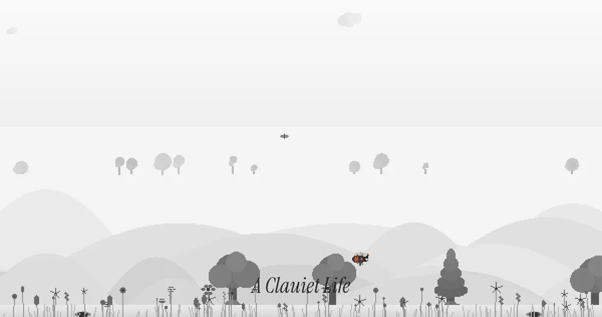
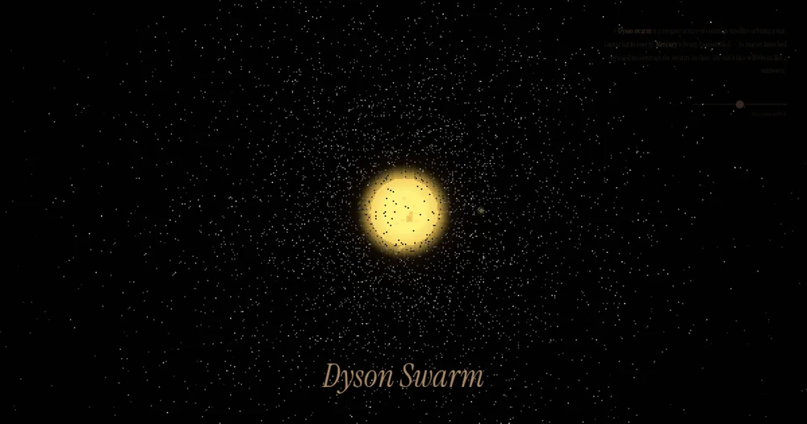

02 / A Clauiet Life / January 2026
What if Claude
were a bee?
A meditative pixel simulation, made with Claude Code. A smaller scale of possible life.
Spend a little time thereA quiet life as a bee, a civilization building around a star, and a landscape that curves overhead.
The other side of an O’Neill cylinder is a landscape in the sky. A small experiment in what it might feel like to live there.
Enter the explorer

A meditative pixel simulation, made with Claude Code. A smaller scale of possible life.
Spend a little time there
A browser simulation of dismantling Mercury to build a civilization-scale solar collector.
Watch the swarm grow
The essays, the films, the occasional experiment.
Free, and
sent when there’s something ready.